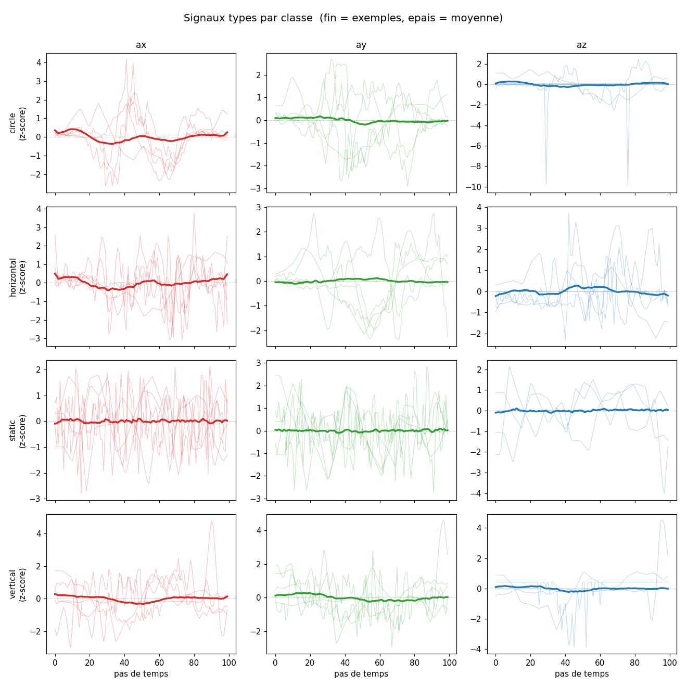
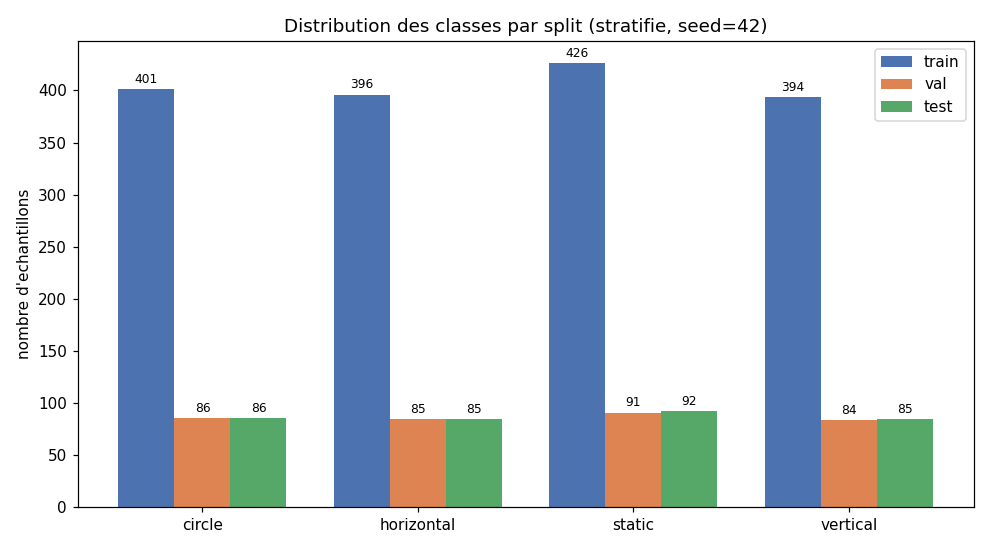
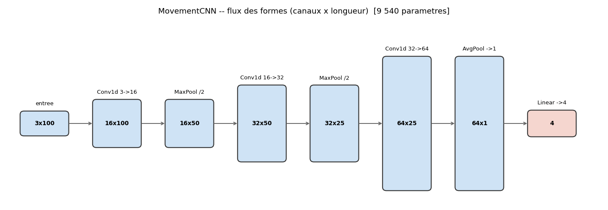
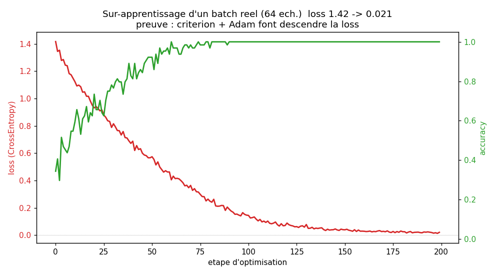
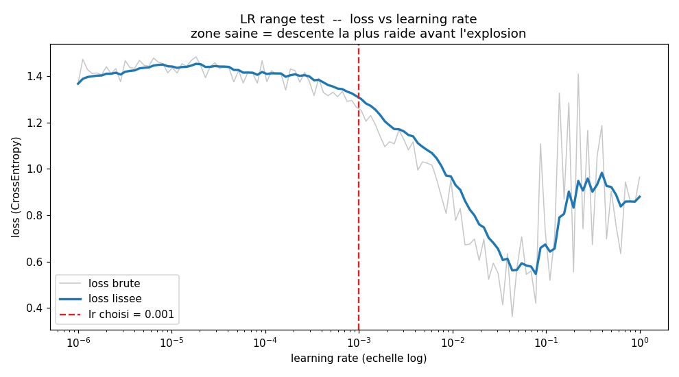
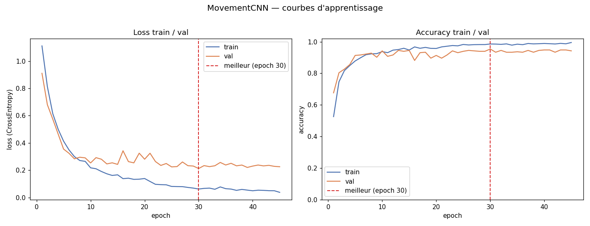
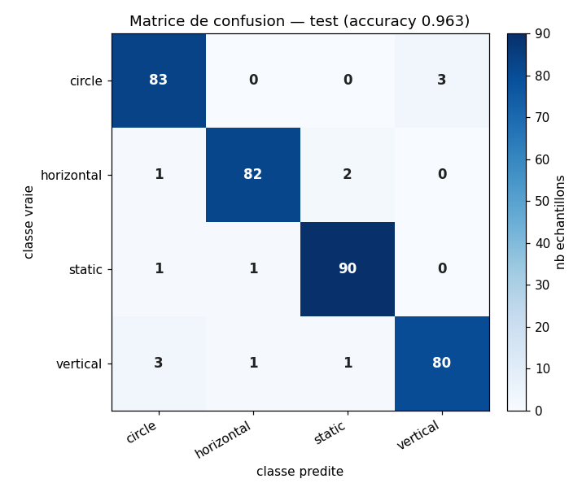
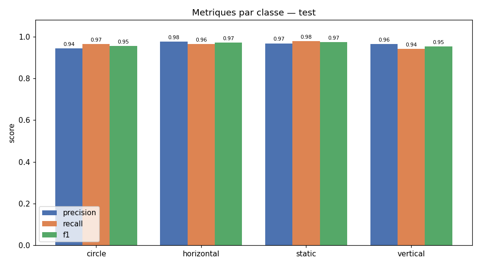

m/s² — fenêtre glissante ~10 s (50 Hz)
°/s — fenêtre glissante ~10 s (50 Hz)
Nécessite Chrome ou Edge (Web Serial API). La carte doit émettre 6 valeurs séparées par tabulation à 115200 bauds.
Le pipeline de classification des mouvements, étape par étape — des données brutes au modèle exporté. Chaque schéma est généré par les scripts du dossier scripts/ et enregistré dans figures/.

Chaque ligne est une classe de mouvement, chaque colonne un axe (ax, ay, az). Les courbes fines sont des exemples réels, la courbe épaisse la moyenne. Les données étant normalisées en z-score par fichier, les moyennes sont quasi plates : la séparation ne vient pas de l'amplitude mais de la forme et de la dynamique du signal — c'est ce que le CNN doit apprendre.

Effectifs par classe dans les splits train / val / test (stratifié, seed=42). Le split d'entraînement est quasi équilibré (ratio max/min = 1.08), ce qui justifie l'absence de pondération dans la fonction de perte.

Flux des formes de tenseur (canaux × longueur) à travers le réseau : trois blocs Conv1d + BatchNorm + ReLU, deux MaxPool, puis un AdaptiveAvgPool qui écrase la dimension temporelle, enfin Dropout + Linear vers 4 classes. Environ 9 540 paramètres — une lame légère, adaptée aux ~1 600 échantillons d'entraînement pour limiter le sur-apprentissage.

Test de sanité : on force le modèle à mémoriser un unique batch réel. La loss s'effondre et l'accuracy monte à 1.0 — preuve que la loss (CrossEntropy) et l'optimizer (Adam) descendent correctement, et que la machinerie d'entraînement est saine.

On augmente le learning rate exponentiellement et on observe la loss. La zone de descente saine s'étend de ~1e-3 à ~5e-2 ; au-delà de ~1e-1, la loss explose. Le taux choisi (1e-3, trait rouge) est conservateur, au début de la pente ; le scheduler ReduceLROnPlateau l'ajuste ensuite automatiquement.

Loss et accuracy train / val au fil des epochs. Meilleur modèle à l'epoch 30 (val accuracy 95.4 %), sauvegardé automatiquement. La loss val plafonne tandis que la loss train continue de descendre : un léger sur-apprentissage, contenu par le Dropout (0.3), le weight decay et l'early stopping (patience 15).

Évaluation sur les 348 échantillons de test jamais vus. La diagonale domine largement (accuracy globale 96.3 %, supérieure à la validation) ; les rares erreurs sont éparses, principalement entre circle et vertical. Aucune confusion systématique.

Precision, recall et f1 par classe sur le test. Scores homogènes (f1 de 0.95 à 0.97) : aucune classe n'est un maillon faible. Le modèle est ensuite exporté au format ONNX (models/movement_cnn.onnx), fidèle au bit près à la version PyTorch.
Le modèle analyse les 2 dernières secondes d'accélération (100 points, 50 Hz) et prédit le geste, ~7 fois par seconde.
Le modèle lit l'accéléromètre (pas le gyroscope). Reproduis les gestes tels qu'enregistrés à l'entraînement pour de meilleurs résultats. Inférence 100 % locale, dans le navigateur.